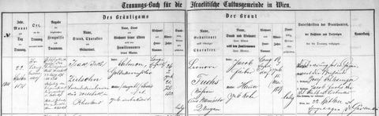

Isak Zirlsohn
b. 1857
Life events
| Born | about 1857 |
|---|---|
| Married | 22 Sep 1878 · Leonore Lotti Fuchs · Leopoldstädter Tempel, 1020 Tempelgasse 5, Vienna, Austria Map |
Family
Isak Zirlsohnb. 1857

Leonore Lotti Fuchs1859–1947
Photos
Jakob Fuchs
Johanna 'Hana' Kohn
Leonore Lotti Fuchs
Isak Zirlsohn